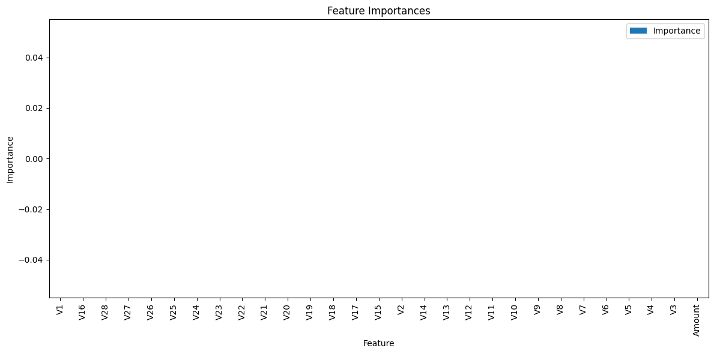
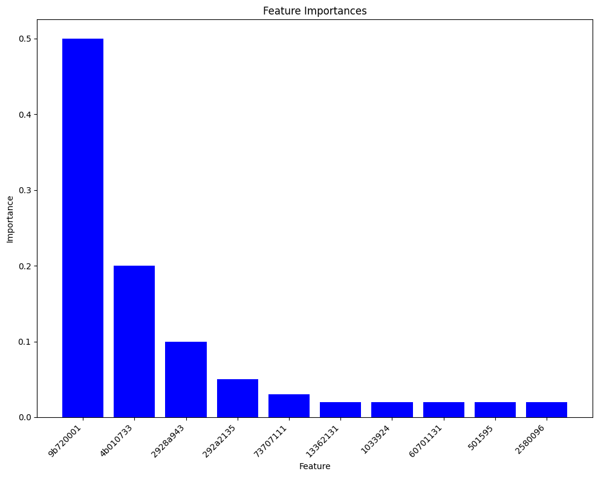
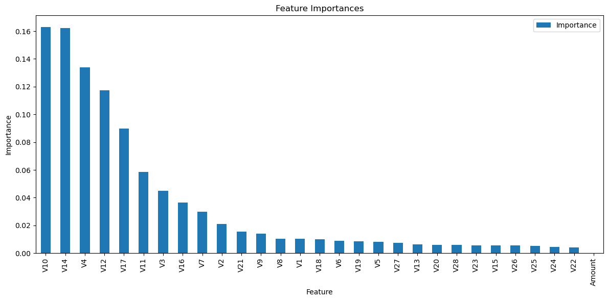
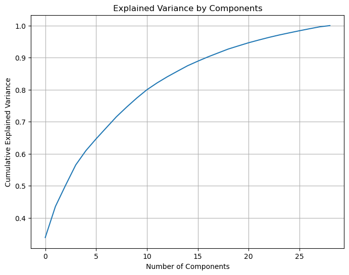
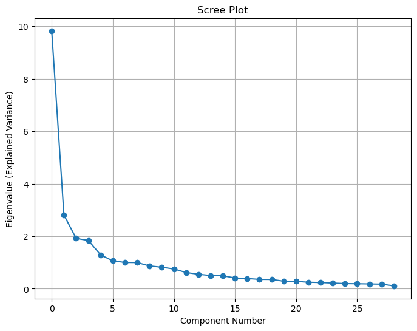

# Importing libraries
import pandas as pd
import numpy as np
from sklearn.ensemble import RandomForestClassifier
import matplotlib.pyplot as plt
from sklearn.decomposition import PCA
from sklearn.preprocessing import StandardScaler# Load the dataset
df = pd.read_csv("./data/creditcard_2023.csv").drop(columns = "id")
df.head()| V1 | V2 | V3 | V4 | V5 | V6 | V7 | V8 | V9 | V10 | ... | V21 | V22 | V23 | V24 | V25 | V26 | V27 | V28 | Amount | Class | |
|---|---|---|---|---|---|---|---|---|---|---|---|---|---|---|---|---|---|---|---|---|---|
| 0 | -0.260648 | -0.469648 | 2.496266 | -0.083724 | 0.129681 | 0.732898 | 0.519014 | -0.130006 | 0.727159 | 0.637735 | ... | -0.110552 | 0.217606 | -0.134794 | 0.165959 | 0.126280 | -0.434824 | -0.081230 | -0.151045 | 17982.10 | 0 |
| 1 | 0.985100 | -0.356045 | 0.558056 | -0.429654 | 0.277140 | 0.428605 | 0.406466 | -0.133118 | 0.347452 | 0.529808 | ... | -0.194936 | -0.605761 | 0.079469 | -0.577395 | 0.190090 | 0.296503 | -0.248052 | -0.064512 | 6531.37 | 0 |
| 2 | -0.260272 | -0.949385 | 1.728538 | -0.457986 | 0.074062 | 1.419481 | 0.743511 | -0.095576 | -0.261297 | 0.690708 | ... | -0.005020 | 0.702906 | 0.945045 | -1.154666 | -0.605564 | -0.312895 | -0.300258 | -0.244718 | 2513.54 | 0 |
| 3 | -0.152152 | -0.508959 | 1.746840 | -1.090178 | 0.249486 | 1.143312 | 0.518269 | -0.065130 | -0.205698 | 0.575231 | ... | -0.146927 | -0.038212 | -0.214048 | -1.893131 | 1.003963 | -0.515950 | -0.165316 | 0.048424 | 5384.44 | 0 |
| 4 | -0.206820 | -0.165280 | 1.527053 | -0.448293 | 0.106125 | 0.530549 | 0.658849 | -0.212660 | 1.049921 | 0.968046 | ... | -0.106984 | 0.729727 | -0.161666 | 0.312561 | -0.414116 | 1.071126 | 0.023712 | 0.419117 | 14278.97 | 0 |
5 rows × 30 columns
# Selecting features and labels
X = df.drop('Class', axis=1)
y = df['Class']# Training the model
rf = RandomForestClassifier(n_estimators=100, random_state=42)
rf.fit(X, y)KeyboardInterrupt: # Getting feature importances
importances = rf.feature_importances_
# Convert the importances into a DataFrame and sort them
features_df = pd.DataFrame({'Feature': X.columns, 'Importance': importances})
features_df = features_df.sort_values(by='Importance', ascending=False)
print(features_df) Feature Importance
0 V1 0.0
15 V16 0.0
27 V28 0.0
26 V27 0.0
25 V26 0.0
24 V25 0.0
23 V24 0.0
22 V23 0.0
21 V22 0.0
20 V21 0.0
19 V20 0.0
18 V19 0.0
17 V18 0.0
16 V17 0.0
14 V15 0.0
1 V2 0.0
13 V14 0.0
12 V13 0.0
11 V12 0.0
10 V11 0.0
9 V10 0.0
8 V9 0.0
7 V8 0.0
6 V7 0.0
5 V6 0.0
4 V5 0.0
3 V4 0.0
2 V3 0.0
28 Amount 0.0# Plotting feature importances
features_df.set_index('Feature').plot(kind='bar', figsize=(12, 6))
plt.title('Feature Importances')
plt.ylabel('Importance')
plt.tight_layout()
plt.show()
# Training the model
rf = RandomForestClassifier(n_estimators=100, random_state=142)
rf.fit(X, y)KeyboardInterrupt: # Getting feature importances
importances = rf.feature_importances_
# Convert the importances into a DataFrame and sort them
features_df = pd.DataFrame({'Feature': X.columns, 'Importance': importances})
features_df = features_df.sort_values(by='Importance', ascending=False)
print(features_df) Feature Importance
0 V1 0.0
15 V16 0.0
27 V28 0.0
26 V27 0.0
25 V26 0.0
24 V25 0.0
23 V24 0.0
22 V23 0.0
21 V22 0.0
20 V21 0.0
19 V20 0.0
18 V19 0.0
17 V18 0.0
16 V17 0.0
14 V15 0.0
1 V2 0.0
13 V14 0.0
12 V13 0.0
11 V12 0.0
10 V11 0.0
9 V10 0.0
8 V9 0.0
7 V8 0.0
6 V7 0.0
5 V6 0.0
4 V5 0.0
3 V4 0.0
2 V3 0.0
28 Amount 0.0# Plotting feature importances
features_df.set_index('Feature').plot(kind='bar', figsize=(12, 6))
plt.title('Feature Importances')
plt.ylabel('Importance')
plt.tight_layout()
plt.show()
from sklearn.preprocessing import StandardScaler
from sklearn.decomposition import PCA
from sklearn.ensemble import RandomForestClassifier
from sklearn.model_selection import train_test_split
from sklearn.metrics import accuracy_score, precision_score, recall_score, roc_auc_score, f1_score, confusion_matrix
import pandas as pd
# Assuming 'data' is your DataFrame
X = df[['V10', 'V14', 'V12', 'V4', 'V17', 'V11', 'V3', 'V16', 'V7', 'V21']]
y = df['Class']
# Scale the data
scaler = StandardScaler()
X_scaled = scaler.fit_transform(X)
# Apply PCA
pca = PCA(n_components=0.95) # Keep 95% of variance
X_pca = pca.fit_transform(X_scaled)
# Split the data
X_train, X_test, y_train, y_test = train_test_split(X_pca, y, test_size=0.2, random_state=42)
# Train the Random Forest classifier
rf = RandomForestClassifier(n_estimators=100, random_state=42)
rf.fit(X_train, y_train)
# Predict and evaluate
y_pred = rf.predict(X_test)
y_pred_prob = rf.predict_proba(X_test)[:, 1]
# Calculating performance metrics
accuracy = accuracy_score(y_test, y_pred)
precision = precision_score(y_test, y_pred)
recall = recall_score(y_test, y_pred)
roc_auc = roc_auc_score(y_test, y_pred_prob)
f1 = f1_score(y_test, y_pred)
cm = confusion_matrix(y_test, y_pred)
print(f"Accuracy: {accuracy}")
print(f"Precision: {precision}")
print(f"Recall: {recall}")
print(f"ROC-AUC: {roc_auc}")
print(f"F1 Score: {f1}")
print("Confusion Matrix:")
print(cm)
Accuracy: 0.999428450837979
Precision: 0.9989654386364832
Recall: 0.9998946925021062
ROC-AUC: 0.9999840602179509
F1 Score: 0.9994298495680014
Confusion Matrix:
[[56691 59]
[ 6 56970]]import matplotlib.pyplot as plt
import numpy as np
# Example feature importances (usually you'd get these from a model like RandomForest)
importances = [0.5, 0.2, 0.1, 0.05, 0.03, 0.02, 0.02, 0.02, 0.02, 0.02]
features = ['9b720001', '4b010733', '2928a943', '292a2135', '73707111', '2580096', '501595', '60701131', '1033924', '13362131']
# Sorting the features by their importance
indices = np.argsort(importances)[::-1]
sorted_features = [features[i] for i in indices]
sorted_importances = [importances[i] for i in indices]
# Plotting
plt.figure(figsize=(10, 8))
plt.bar(range(len(sorted_importances)), sorted_importances, align='center', color='blue')
plt.xticks(range(len(sorted_features)), sorted_features, rotation=45, ha="right") # Rotate labels to avoid overlap
plt.xlabel('Feature')
plt.ylabel('Importance')
plt.title('Feature Importances')
plt.tight_layout() # Adjust layout to make room for label rotation
plt.show()
# Getting feature importances
importances = rf.feature_importances_
# Convert the importances into a DataFrame and sort them
features_df = pd.DataFrame({'Feature': X.columns, 'Importance': importances})
features_df = features_df.sort_values(by='Importance', ascending=False)
print(features_df) Feature Importance
9 V10 0.163159
13 V14 0.162165
3 V4 0.133774
11 V12 0.117321
16 V17 0.089908
10 V11 0.058668
2 V3 0.045020
15 V16 0.036533
6 V7 0.029807
1 V2 0.020868
20 V21 0.015493
8 V9 0.014113
7 V8 0.010455
0 V1 0.010227
17 V18 0.010189
5 V6 0.008954
18 V19 0.008658
4 V5 0.008241
26 V27 0.007435
12 V13 0.006490
19 V20 0.006046
27 V28 0.005814
22 V23 0.005570
14 V15 0.005489
25 V26 0.005484
24 V25 0.005300
23 V24 0.004468
21 V22 0.004301
28 Amount 0.000049# Plotting feature importances
features_df.set_index('Feature').plot(kind='bar', figsize=(12, 6))
plt.title('Feature Importances')
plt.ylabel('Importance')
plt.tight_layout()
plt.show()
We used the entire dataset to train the model for the purpose of feature selection to detect features contributing the most to predicting the outcome. However, we should keep in mind that this method won’t give us insights into the model’s performance on unseen data since you’re not holding out a test set for evaluation.
After selecting the most important features, we can proceed to use them in training ML models subsequently, potentially with different subsets of data or different modeling techniques to confirm their utility and robustness. This method also helps in reducing dimensionality before applying computationally intensive hyperparameter tuning algorithms.
# Standardizing the features
scaler = StandardScaler()
X_scaled = scaler.fit_transform(X)# Applying PCA
pca = PCA()
pca.fit(X_scaled)PCA()In a Jupyter environment, please rerun this cell to show the HTML representation or trust the notebook.
On GitHub, the HTML representation is unable to render, please try loading this page with nbviewer.org.
PCA()
plt.figure(figsize=(8, 6))
plt.plot(np.cumsum(pca.explained_variance_ratio_))
plt.xlabel('Number of Components')
plt.ylabel('Cumulative Explained Variance')
plt.title('Explained Variance by Components')
plt.grid(True)
plt.show()
plt.figure(figsize=(8, 6))
plt.plot(pca.explained_variance_, 'o-')
plt.xlabel('Component Number')
plt.ylabel('Eigenvalue (Explained Variance)')
plt.title('Scree Plot')
plt.grid(True)
plt.show()